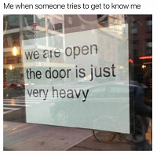
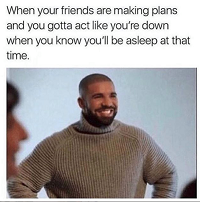

Introvert much? You've probably:
- pretended to be sick so you don't have to go to that meeting 
- stared at your ringing phone numerous times and wondered why people can't just text you instead (have you never heard of WhatsApp, man?)
- stayed up all night to finish that book or get to level 200 on that game, because why not?
- had to buy something online so you don't have to go to the store and face people
- wondered how people make all these cool irl friends (seriously though, how do y'all do that?)
- kept a really good idea to yourself in a meeting, because of all that attention, jesus.
- been badgered to loosen up and have some fun (im good, bro. really.)
- had trouble going to sleep because there are like 1235 open tabs in your head at 2:15 am
- just wished and hoped your friend would call to cancel so you can stay home and do your thing
- wanted to really do fun and cool things but have no interest, whatsoever to leave your house
